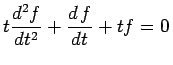

Inhalt Index DeskTop Bronstein

 Integraltransformationen Laplace-Transformation Lösung von Differentialgleichungen mit Hilfe der Laplace-Transformation
Integraltransformationen Laplace-Transformation Lösung von Differentialgleichungen mit Hilfe der Laplace-Transformation


Differentialgleichungen, deren Koeffizienten Polynome in t sind, eignen sich besonders für die Anwendung der LAPLACE-Transformation. Nach Anwendung der Gleichung (15.16) erhält man zwar im Bildbereich wieder eine Differentialgleichung, ihre Ordnung kann jedoch niedriger sein.
Sind speziell die Koeffizienten Polynome 1. Grades, dann ist die Differentialgleichung im Bildbereich von 1. Ordnung und dadurch meist leicht lösbar.
| Beispiel |
|
BESSELsche Differentialgleichung 0-ter Ordnung (n=0): . |